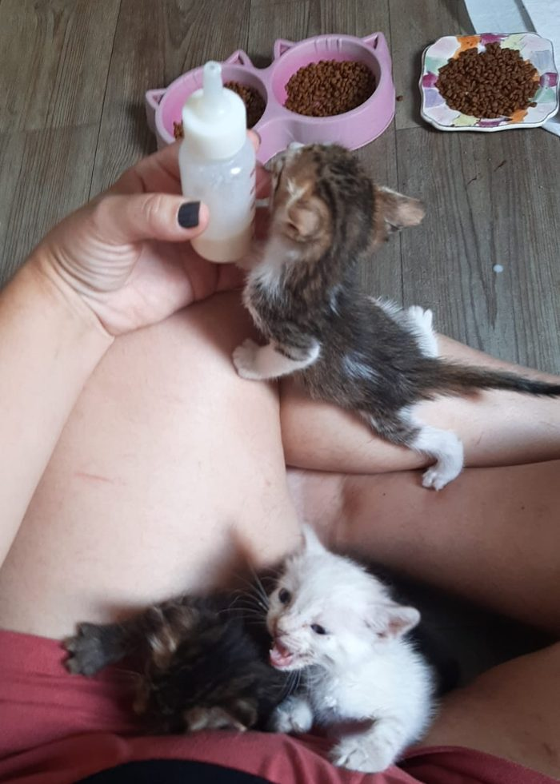
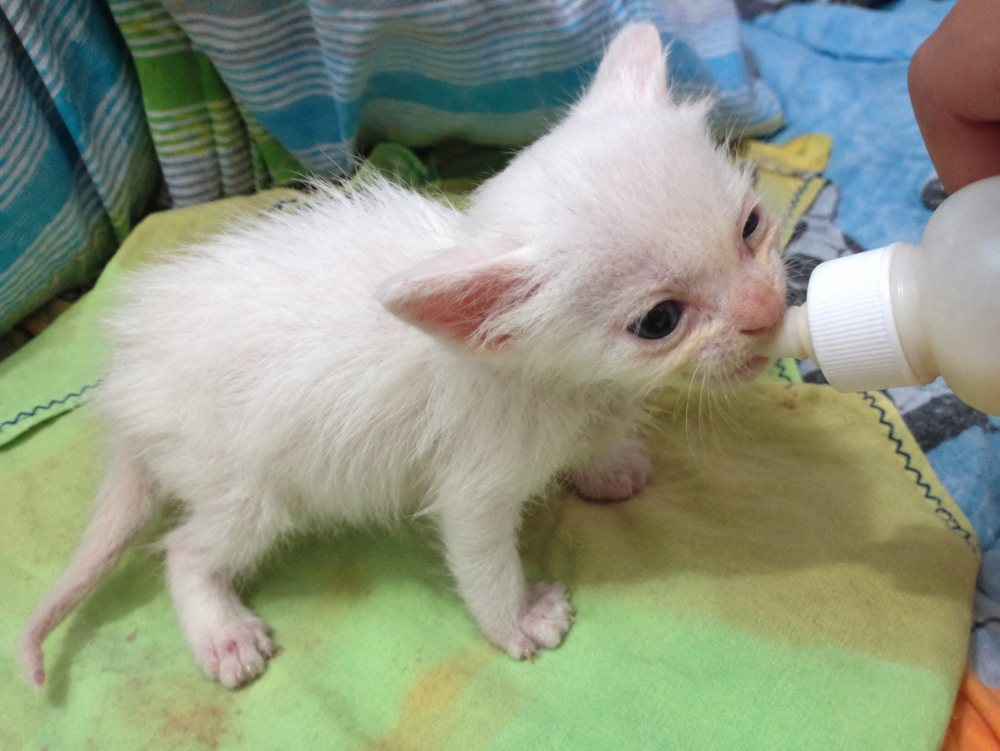

Como cuidar de um gatinho recém-nascido sem mãe
Encontrar um filhote de gato sozinho, chorando e do tamanho de uma mão, assusta qualquer um. A boa notícia é que dá para salvá-lo seguindo poucas regras. Aqui no Lar Vira-Lata resgatamos gatinhos da rua há anos, e este guia reúne o que mais importa nas primeiras semanas.

Resumo rápido
- Calor primeiro, comida depois. Filhote frio não digere nada.
- Só leite próprio para filhotes de gato. Nunca leite de vaca.
- Mamadas a cada 2 a 3 horas nas duas primeiras semanas.
- Estimule o xixi e o cocô depois de cada mamada.
- Pese todo dia e leve ao veterinário o quanto antes.
Importante: este texto é informativo e não substitui um veterinário. Filhotes recém-nascidos pioram em poucas horas. Leve a um profissional no mesmo dia, ou no dia seguinte no máximo.
1. Antes de tudo: a mãe realmente sumiu?
Muitas vezes a mãe só saiu para buscar comida. Se o filhote estiver quentinho, quieto e de barriga cheia, observe de longe (sem ficar por perto, para ela não ter medo de voltar) por 4 a 6 horas. Recolha o filhote se:
- a mãe não voltou depois desse tempo;
- ele está frio, sujo, ferido ou chorando sem parar;
- está em local perigoso (rua, chuva, cachorros);
- a mãe foi atropelada ou morreu.
2. Aqueça o filhote (a regra mais importante)
Recém-nascidos não regulam a própria temperatura. Um filhote com o corpo frio não consegue digerir leite e pode morrer se for alimentado assim. Se ele estiver gelado, aqueça devagar antes de dar qualquer coisa.
- Faça um ninho numa caixa com toalhas macias, longe de correntes de ar.
- Use bolsa de água morna ou garrafa com água morna embrulhada em pano. Nunca encoste fonte de calor direto na pele e deixe sempre um canto da caixa sem calor, para ele se afastar se quiser.
- Evite almofada elétrica sem controle de temperatura: queima com facilidade.
| Idade | Temperatura do ambiente |
|---|---|
| 1ª semana | cerca de 30 a 32 °C |
| 2ª semana | cerca de 27 a 29 °C |
| 3ª e 4ª semanas | cerca de 24 a 27 °C |
3. O leite certo
Use substituto de leite para filhotes de gato, vendido em pet shops e veterinárias (procure na embalagem a indicação para gatos filhotes). Prepare sempre conforme o rótulo, com água fervida e morna, e descarte o que sobrar depois de algumas horas.
Nunca dê: leite de vaca, leite em pó ou sem lactose para humanos, leite de soja ou de amêndoas, e não use receitas caseiras sem orientação do veterinário. Elas causam diarreia e desidratação.
4. Como dar a mamada
- Use mamadeira própria para filhotes, com bico pequeno. Seringa sem agulha serve de emergência, bem devagar.
- O leite deve estar morno, perto da temperatura do corpo. Pingue uma gota no seu pulso: tem que parecer morna, nem fria nem quente.
- Segure o filhote de barriga para baixo, como se ele estivesse mamando na mãe. Nunca de barriga para cima: o leite pode ir para o pulmão.
- Deixe-o mamar no ritmo dele. Se o leite sair pelo nariz, pare, incline a cabeça levemente para baixo e espere ele se recuperar.
- Pare quando ele largar o bico ou a barriguinha estiver redonda, sem ficar dura ou estufada.

| Idade | Intervalo entre mamadas |
|---|---|
| 0 a 2 semanas | a cada 2 a 3 horas, inclusive de madrugada |
| 2 a 3 semanas | a cada 3 a 4 horas |
| 3 a 4 semanas | a cada 4 a 5 horas, com início da comida pastosa |
A quantidade varia com o peso e com o produto. Siga a tabela da embalagem e confirme com o veterinário, porque dar demais também faz mal.
5. Estimule o xixi e o cocô
A gata mãe lambe a barriga e o bumbum dos filhotes para eles fazerem as necessidades. Sem mãe, essa tarefa é sua, depois de toda mamada, até cerca de 3 a 4 semanas de vida:
- Molhe um algodão ou gaze em água morna.
- Passe com delicadeza na região genital e do bumbum, em movimentos curtos.
- Continue até ele terminar (xixi, e o cocô costuma sair uma ou duas vezes ao dia).
- Seque bem com um pano macio.
O xixi deve ser amarelo-claro e o cocô, de cor mostarda e com forma de pasta. Fezes líquidas, muito escuras, ou ausência de cocô por mais de 24 horas pedem veterinário.
6. Higiene e conforto
- Limpe o rosto sujo de leite com pano morno e úmido, e seque na hora.
- Evite banho nessa idade. Se for indispensável, só a parte suja, com água morna, e seque tudo muito bem.
- Lave as mãos antes e depois de cada contato e lave as mamadeiras a cada uso.
- Não use antipulgas feitos para cães ou adultos. Pergunte ao veterinário o que é seguro para a idade e o peso.
7. Pese todos os dias
Uma balança de cozinha resolve. Pese sempre no mesmo horário e anote. Um filhote saudável ganha em média 10 a 15 gramas por dia e costuma dobrar o peso de nascimento na primeira semana. Se o peso parar de subir ou cair por mais de um dia, é sinal de que algo está errado.
8. Quando procurar o veterinário com urgência
- corpo frio ou mole, ou muito quieto;
- recusa total de mamar, ou engasgos repetidos;
- diarreia, vômito ou barriga muito inchada;
- choro contínuo e fraco;
- pele que demora a voltar quando você a puxa levemente (desidratação);
- secreção nos olhos ou nariz, ou olhos colados;
- queda de peso.
Mesmo que ele pareça bem, a primeira consulta deve acontecer nos primeiros dias para avaliar a saúde geral, checar parasitas e definir o plano de vermífugo e vacinas.
9. Linha do tempo das primeiras semanas
- 0 a 2 semanas: olhos fechados, dorme quase o tempo todo e só quer mamar e ficar quentinho.
- 1 a 2 semanas: os olhos começam a abrir, geralmente entre o 7º e o 14º dia, e são azulados.
- 2 a 3 semanas: as orelhas se abrem e ele tenta ficar de pé e engatinhar.
- 3 a 4 semanas: nascem os dentinhos e ele começa a andar e a explorar. É a hora de oferecer uma papinha de ração própria para filhotes misturada ao leite.
- 4 a 8 semanas: desmame gradual, caixa de areia (areia fina sem perfume, para ele não comer) e brincadeiras.
- A partir de 6 a 8 semanas: as vacinas começam, conforme o veterinário orientar.
10. Socialização: o que a mãe também ensinaria
Filhotes criados sem mãe precisam de colo, voz calma e contato com gente desde cedo, e de alguém que os ajude a aprender a ser gato: brincar com brinquedos (nunca com as mãos, para não aprender a morder), usar a caixa de areia e arranhar o arranhador. Se puder, apresente a outros gatos saudáveis e vacinados depois de liberado pelo veterinário.
Perguntas frequentes
Posso dar leite de vaca para filhote de gato?
Não. O leite de vaca não tem os nutrientes certos e costuma causar diarreia, que desidrata rápido. Use apenas substituto de leite próprio para filhotes de gato.
De quanto em quanto tempo um gatinho recém-nascido mama?
Nas duas primeiras semanas, a cada 2 a 3 horas, inclusive de madrugada. Depois o intervalo aumenta aos poucos, até 4 a 5 horas na quarta semana.
Como estimular o filhote a fazer xixi e cocô?
Passe algodão ou gaze morna e úmida na barriga e no bumbum depois de cada mamada, até ele terminar. Sem isso, ele não consegue eliminar sozinho até as 3 a 4 semanas.
Como saber se o filhote está ganhando peso direito?
Pese todo dia. O normal é ganhar cerca de 10 a 15 gramas por dia. Se o peso estacionar ou cair por mais de um dia, procure o veterinário.
Devo pegar um filhote que encontrei sozinho?
Observe de longe por algumas horas primeiro, porque a mãe pode estar por perto. Recolha se ela não voltar, se o filhote estiver frio, ferido ou em perigo.
Cuidar de bicho resgatado custa caro
O Lar Vira-Lata é um casal que cuida de 18 animais resgatados com o próprio bolso: ração, areia, veterinário e remédios. Se este guia ajudou, considere apoiar com um Pix mensal, de qualquer valor.